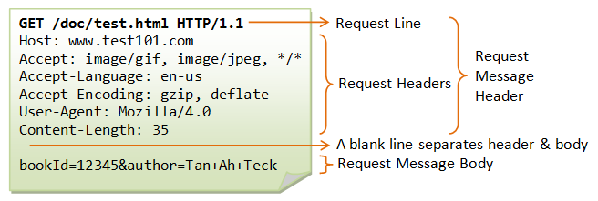

◾Request Line: CR/LF-terminated line containing 3 space-separated items, namely:
- Method: indicates the operation being requested by the client;
- Request URL: URL of the web resource to perform the operation on
- HTTP Version: version of HTTP being used by the client
◾Message Headers: contains additional information about the request; each message header is on a line by itself, and consists of a message header field, followed by a colon (:), and then a message header value; in request messages, the types of message headers can be general headers, request headers, or entity headers; starting with HTTP/1.1, at least one message header is required (i.e., the Host header, indicating the web host to which the request is being sent, since there can be multiple web hosts being hosted in the server)
- Host: Host header fieldSpecifies the domain name of the server (for virtual hosting), and (optionally) the TCP port number on which the server is listening.
- Accept: Accept headers can be used to indicate that the request is specifically limited to a small set of desired types.
- Accept-Language: Accept-Language request-header field is similar to Accept, but restricts the set of natural languages that are preferred as a response to the request.
- Accept-Encoding: The Accept-Encoding request-header field is similar to Accept, but restricts the content-codings.
- User-Agent: The User-Agent request-header field contains information about the user agent originating the request.
- Content-Length: The Content-Length entity-header field indicates the size of the entity-body, in decimal number of OCTETs, sent to the recipient or, in the case of the HEAD method, the size of the entity-body that would have been sent had the request been a GET.
◾Empty Line: CR/LF-terminated blank line by itself; this is required and serves to terminate the list of message headers in the request message
◾(optional) Message Body: in request messages, this is typically used by the client to send data up to the server for processing; this data may be user-supplied data in HTML forms, or files to be uploaded to the server, e.g.
◾The picture below is an example of HTTP Request Message
